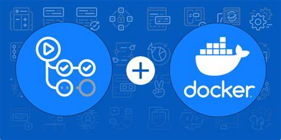

Programación
En la asignatura de Programación, aprenderás los fundamentos de la programación, incluyendo estructuras de control, funciones, y programación orientada a objetos. A lo largo de la evaluación, trabajarás en varios proyectos prácticos para aplicar lo que has aprendido.

Sistemas Informáticos
La asignatura de Sistemas Informáticos cubre los conceptos básicos de los sistemas operativos, redes y hardware. Durante la evaluación, tendrás la oportunidad de trabajar con diferentes sistemas operativos y aprender sobre su funcionamiento interno.
Entornos de Desarrollo
En Entornos de Desarrollo, aprenderás sobre las herramientas y prácticas utilizadas en el desarrollo de software profesional. Esto incluye el uso de sistemas de control de versiones, depuración de código, y pruebas automatizadas.

Lenguaje de Marcas
La asignatura de Lenguaje de Marcas te introduce a los lenguajes de marcado como HTML y XML. Aprenderás a crear documentos estructurados y a utilizar estilos CSS para darles formato.
Bases de Datos
En la asignatura de Bases de Datos, aprenderás sobre el diseño y la gestión de bases de datos relacionales. Aprenderás a escribir consultas SQL y a diseñar esquemas de bases de datos eficientes.